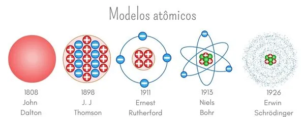

1 estrutura atômica
A partícula base que forma toda a matéria é qualquer substância é o átomo. Atualmente, temos 118 espécies atômicas catalogadas. Acreditou-se por muito tempo que ele era a menor parte da matéria, o indivisível. Foram formuladas no decorrer dos anos teorias atômicas, cada uma com uma estrutura atômica diferente. Com a evolução dessas teorias foi agregado a composição do átomo partículas ainda menores, como os prótons, que são partículas de carga positiva, os nêutrons, partículas de cargas neutras e os elétrons, partículas de carga negativa. A teoria atômica mais aceita propõe que o átomo é formado por um núcleo, onde se encontram os prótons e os nêutrons rodeados por uma nuvem de elétrons denominada eletrosfera, que é conectada ao núcleo por força eletromagnética. Uma restrição a essa estrutura são os hidrogênios (ARAUJO, 2023) .
1.1 MODELOS ATÔMICOS
2.1.1 Modelo de Dalton
Desenvolvido por John Dalton em 1808 foi o primeiro modelo atômico proposto para tentar explicar a construção da matéria. Conhecido por “bola de bilhar", esse modelo afirma que o átomo seria uma esfera maciça, homogênea, indivisível e indestrutível. Baseado nessa ideia Dalton determinou alguns princípios para explicar a matéria e seus fenômenos, como a ideia de que átomos não são formados nem destruídos ou o conceito de que ao formar substâncias os átomos não se alteram (LIMA, 2023).
1.1.2 Modelo de Thomson
Proposto por Joseph John Thomson em 1898, afirma que o átomo é divisível, possui eletricidade e é formado por partículas subatômicas. Thomson construiu uma nova teoria atômica, por meio de experimentos defendeu a existência de cargas elétricas negativas presas a um núcleo, com carga elétrica positiva. Por essa estrutura esse modelo é conhecido como “pudim de passas”. Segundo Thomson o átomo é eletricamente neutro e os elétrons não estão presos no núcleo positivo, em determinadas condições podem ser transferidos a outros átomos (LIMA, 2023).
1.1.3 Modelo de Rutherford
Em 1911, Ernest Rutherford propôs um novo modelo atômico, afirmando que o átomo é formado por uma região central eletricamente positiva de massa elevada. Em torno desse centro há uma região de massa desprezível onde orbitam os elétrons. Por sua configuração esse modelo é comparado ao Sistema Solar, com o núcleo sendo o Sol e os elétrons os planetas. Para Rutherford o átomo é formado por duas regiões principais: o núcleo e a eletrosfera (LIMA, 2023).
1.1.4 Modelo de Bohr
Determina que a eletrosfera é formada por camadas de energia onde os elétrons se distribuem e foi proposta por Niels Bohr em 1913. Também conhecido por modelo atômico de Rutherford-Bohr, porque é uma evolução do modelo de Rutherford tratando de estabilidade dos átomos. Bohr, empregando os conceitos recém descobertos da física quântica determinou que os elétrons ocupam camadas eletrônicas que detém valores pré-definidos de energia. Conforme mais distante do núcleo se encontrem as camadas eletrônicas serão mais energéticas. Os elétrons podem transitar entre as camadas por meio da absorção ou liberação da diferença de energia entre duas camadas. As camadas eletrônicas são representadas pela sequência de letras K, L, M, N, O, P e Q, cada uma possuindo uma determinada capacidade de átomos (LIMA, 2023).
1.1.5 Modelo de Schrödinger
Modelo atômico mais aceito atualmente proposto por Erwin Schrödinger com ajuda de outros cientistas em 1926. Reunindo todos os conceitos propostos sobre o átomo e fazendo cálculos matemáticos, Schrödinger afirmou que a eletrosfera é formada por regiões que se assemelham a nuvens eletrônicas e não por órbitas de trajetória determinada. Com isso, esse modelo atômico inseriu o conceito de orbital atômico, que é uma região de alta probabilidade de se encontrar elétrons e que é definida por meio de uma equação matemática, chamada função de onda (LIMA, 2023).
Figura 1 - Exemplificação dos modelos atômicos
REFERÊNCIAS
ARAÚJO, Laysa Bernardes Marques de. Átomo. Manual da Química. Disponível em https://www.manualdaquimica.com/quimica-geral/atomo.htm acessado em 2023.
LIMA, Ana Luiza Lorenzen. Modelos atômicos. Brasil escola. Disponível em https://brasilescola.uol.com.br/fisica/modelos-atomicos.htm. Acesso em: 3 abr. 2023.